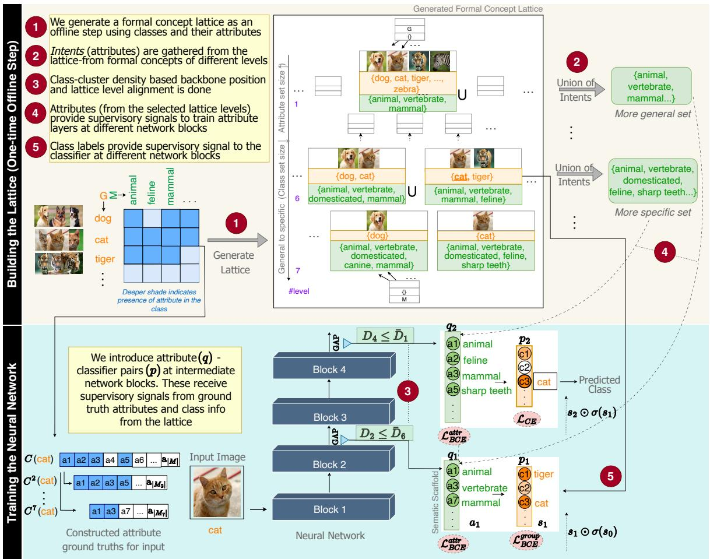
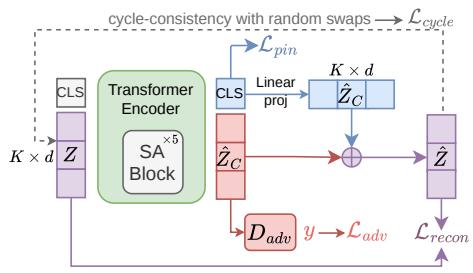
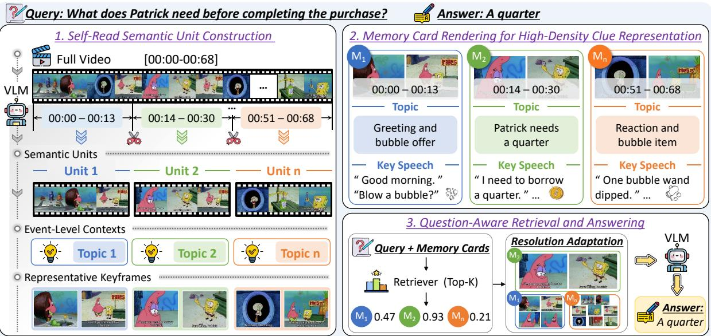

6 月 6 日：Balancing Image Compression and Generation 等视觉表征主线更新
本期聚焦通用视觉表征、视觉语言预训练与视频自监督中最值得跟进的论文，并保留 CCF A/B、OpenReview 与 arXiv 状态线索。
先读 SelfBootTok，它最贴近通用视觉表征里的 tokenizer/latent bottleneck，和最近的 RAE、视觉 AR、自举式 token 学习可以直接并读。第二步读 ViCuR 和 VarKD，一个讨论多模态 on-policy distillation 的教师 privilege 是否可恢复，另一个系统检验语言 KD 方法迁移到视觉 AR 生成时为什么会失效。第三步读 GeoVR 和 Future-L1，两者都在让视频/MLLM 的 latent 表征保留几何、运动和未来视觉线索。Formal Concept Lattices、Cosine Misleads、Diff-CA 更像表征诊断/结构化表示工具；MemoryCard、MGSD、BRepCLIP、VideoKR 建议按长视频、多模态规划、3D/CAD 或会议状态需求扫读。
论文索引
| 优先级 | 论文 | 类型 | 相关性 | 一句话理由 |
|---|---|---|---|---|
| P0 | Balancing Image Compression and Generation with Bootstrapped Tokenization | arXiv | 高 | SelfBootTok 用自举方式拆分全局/局部视觉 token，是今天最直接服务通用图像 tokenizer 与表示压缩的工作。 |
| P1 | ViCuR: Visual Cues as Recoverable Privilege for Multimodal On-Policy Distillation | arXiv | 高 | 把 privileged teacher 的额外信息限制为可由视觉输入恢复的 cues，避免多模态蒸馏学到不可迁移捷径。 |
| P1 | Knowledge Distillation for Visual Autoregressive Models | arXiv | 高 | 首次系统研究视觉 AR 模型 KD，并提出 VarKD 处理长解码和视觉 token ambiguity。 |
| P1 | Learning Geometric Representations from Videos for Spatial Intelligent Multimodal Large Language Models | arXiv | 高 | GeoVR 用纯 2D 视频和 3D foundation teacher 蒸馏几何 latent，补 MLLM 的空间一致性。 |
| P1 | Imagine Before You Predict: Interleaved Latent Visual Reasoning for Video Event Prediction | arXiv + project | 高 | Future-L1 在语言 token 与连续视觉 latent 之间交替推理，保留未来事件预测中的细粒度运动/几何线索。 |
| P2 | Formal Concept Lattices are Good Semantic Scaffolds for Concept-Based Learning | arXiv + ICML 2026 | 中高 | 用形式概念格把语义层级对齐到网络深度，适合关注可解释视觉表征和概念监督的人精读。 |
| P2 | Cosine Misleads: Auxiliary Losses Reshape Vision Language Models, Not Their Latents | arXiv | 中高 | 诊断 latent visual reasoning 中 cosine/MSE 对齐指标可能反向误导，提醒看 load-bearing latent 而非表面相似度。 |
| P2 | Diff-CA: Separating Common and Salient Factors with Diffusion Models | arXiv | 中高 | 用 diffusion 条件分解做 contrastive analysis，将 common/salient 因子分离接到高保真图像生成。 |
| P2 | MemoryCard: Topic-Aware Multi-Modal Clue Compression for Long-Video Question Answering | arXiv | 中高 | 把长视频切成可检索 memory cards，在相近 token budget 下提升长视频 VLM 的事件级证据组织。 |
| P2 | Learning Visual Spatial Planning from Symbolic State via Modality-Gap-Aware Self-Distillation | arXiv | 中高 | MGSD 用 symbolic state teacher 蒸馏纯视觉 planning student，重点在视觉状态恢复与推理能力迁移。 |
| P3 | HyperVis: Continuous Latent Visual Relational Graphs on the Lorentz Hyperboloid for Compositional Reasoning | arXiv | 中 | 用连续视觉关系图和双曲约束替代离散 scene graph label，作为 VLM 关系表征正则值得扫读。 |
| P3 | BRepCLIP: Contrastive Multimodal Pretraining on BRep Primitives for CAD Understanding | arXiv | 中 | CAD 垂直场景，但“结构 token + CLIP 对比预训练”对 3D/结构化视觉表征有可迁移启发。 |
| 扫读 | VideoKR: Towards Knowledge- and Reasoning-Intensive Video Understanding | arXiv + ICML 2026 Spotlight | 中 | 不是视觉 SSL 主线，但 ICML Spotlight 的视频 reasoning corpus 对视频后训练数据设计有状态价值。 |
主线阅读
 P0
P0
Balancing Image Compression and Generation with Bootstrapped Tokenization
高相关；详见方法、贡献和实验边界。
方法：SelfBootTok 用自举方式拆分全局/局部视觉 token，是今天最直接服务通用图像 tokenizer 与表示压缩的工作
 P1
P1
ViCuR: Visual Cues as Recoverable Privilege for Multimodal On-Policy Distillation
高相关；详见方法、贡献和实验边界。
方法：把 privileged teacher 的额外信息限制为可由视觉输入恢复的 cues，避免多模态蒸馏学到不可迁移捷径
 P1
P1
Knowledge Distillation for Visual Autoregressive Models
高相关；详见方法、贡献和实验边界。
方法：首次系统研究视觉 AR 模型 KD，并提出 VarKD 处理长解码和视觉 token ambiguity
 P1
P1
Learning Geometric Representations from Videos for Spatial Intelligent Multimodal Large Language Models
高相关；详见方法、贡献和实验边界。
方法：GeoVR 用纯 2D 视频和 3D foundation teacher 蒸馏几何 latent，补 MLLM 的空间一致性
 P1
P1
Imagine Before You Predict: Interleaved Latent Visual Reasoning for Video Event Prediction
高相关；详见方法、贡献和实验边界。
方法：Future-L1 在语言 token 与连续视觉 latent 之间交替推理，保留未来事件预测中的细粒度运动/几何线索

P2Formal Concept Lattices are Good Semantic Scaffolds for Concept-Based Learning
中高相关；详见方法、贡献和实验边界。
方法：用形式概念格把语义层级对齐到网络深度，适合关注可解释视觉表征和概念监督的人精读
 P2
P2
Cosine Misleads: Auxiliary Losses Reshape Vision Language Models, Not Their Latents
中高相关；详见方法、贡献和实验边界。
方法：诊断 latent visual reasoning 中 cosine/MSE 对齐指标可能反向误导，提醒看 load-bearing latent 而非表面相似度

P2Diff-CA: Separating Common and Salient Factors with Diffusion Models
中高相关；详见方法、贡献和实验边界。
方法：用 diffusion 条件分解做 contrastive analysis，将 common/salient 因子分离接到高保真图像生成

P2MemoryCard: Topic-Aware Multi-Modal Clue Compression for Long-Video Question Answering
中高相关；详见方法、贡献和实验边界。
方法：把长视频切成可检索 memory cards，在相近 token budget 下提升长视频 VLM 的事件级证据组织
 P2
P2
Learning Visual Spatial Planning from Symbolic State via Modality-Gap-Aware Self-Distillation
中高相关；详见方法、贡献和实验边界。
方法：MGSD 用 symbolic state teacher 蒸馏纯视觉 planning student，重点在视觉状态恢复与推理能力迁移
 P3
P3
HyperVis: Continuous Latent Visual Relational Graphs on the Lorentz Hyperboloid for Compositional Reasoning
中相关；详见方法、贡献和实验边界。
方法：用连续视觉关系图和双曲约束替代离散 scene graph label，作为 VLM 关系表征正则值得扫读
 P3
P3
BRepCLIP: Contrastive Multimodal Pretraining on BRep Primitives for CAD Understanding
中相关；详见方法、贡献和实验边界。
方法：CAD 垂直场景，但“结构 token + CLIP 对比预训练”对 3D/结构化视觉表征有可迁移启发
 扫读
扫读
VideoKR: Towards Knowledge- and Reasoning-Intensive Video Understanding
中相关；详见方法、贡献和实验边界。
方法：不是视觉 SSL 主线，但 ICML Spotlight 的视频 reasoning corpus 对视频后训练数据设计有状态价值